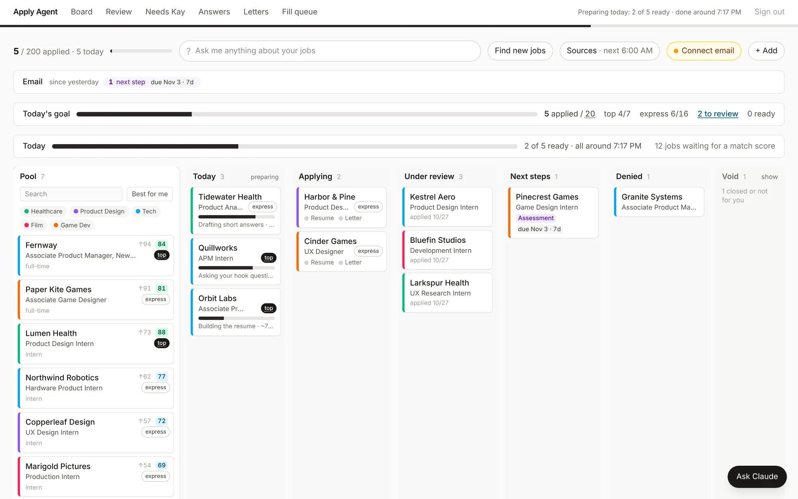

Apply
Agent
An AI agent that runs my job search with me in the loop. It finds and reads postings, tailors my resume and letters, fills the forms and tracks the replies. It never writes a line about me I haven't verified, and it never presses Submit.
The short version
1 minI apply to roles across product, design, games and hardware, several a day. The slow parts were fitting a one-page resume where every bullet fills exactly two lines, re-entering the same forms, and tracking replies across two spreadsheets, a Notion table and my inbox. Going faster could not cost accuracy: every line has to be something I can defend in an interview.
One local app that runs the whole loop: find, read, prepare, I review, fill, I submit, track, learn. Models read and draft; code checks. Resume lines come word for word from a bank of bullets I verified, every number in a letter has to trace back to my own facts, and the browser agent stops at the review page.
- 350
- new postings found, 299 jobs scored
- 265
- postings read and parsed, plus 264 application forms read
- 13
- applications submitted through it
- 791
- model calls, about $15 (as reported by Claude Code)
The whole build
8 minHow it works
Every job moves through the same eight steps. Two of them belong to me, and code makes sure they stay mine.
- FindThree looks a day at new-grad lists and the public job boards of companies I follow, deduplicated by posting, link and title.
- ReadPulls the posting from the job board's own API, parses it with Haiku, and reads the actual application form to see what it asks for.
- Score and sortHaiku lists which must-haves I meet, with evidence. Code turns that into a 0 to 100 score and a lane: top, express or skip.
- PrepareA one-page resume from my bank, checked in Word. A company and role analysis. A letter and short answers where the form asks.
- I reviewTop jobs: I build the letter's outline myself. Express jobs: one card each, and one key approves exactly what is on it.
- FillA Chrome window fills the form with my approved files and saved answers, then parks at the review page.
- I submitI check the page and press Submit myself. The agent records the confirmation page.
- Track and learnReads my inbox read-only for confirmations, tests, interviews and rejections. Every letter I approve teaches it my style.

What it may never do
These rules live in code, so no prompt and no text on a job page can talk the agent out of them.
- Press Submit
- The form filler never clicks a button that reads submit, apply, next, continue or save, and never presses Enter. It waits for me.
- Fill with files I didn't approve
- A fill can only be queued after I approve the resume and the letter, or mark the letter not needed. Before the tab opens, each file is checked by SHA-256 against what I approved; if anything changed, the job leaves the queue.
- Touch my accounts
- No passwords, no new accounts, no 2FA, no CAPTCHAs. Each one pauses the fill and becomes a step on my list.
- Answer legal or demographic questions
- Left for me, unless I set the answer myself and turn that on. A single question that asks two legal things at once is always mine.
- Write to anyone
- Nothing goes out without my approval of the exact text. Gmail access is read-only: three read tools allowed by name, every other tool denied.
- Work around a website
- It uses the job boards' official APIs and an honest user agent. A site that turns programs away gets a button for me to open the form in my own browser. No LinkedIn automation at all.
- Delete anything
- Archive only. Every change the inbox reader makes to a job comes with an Undo.
Truth checks
The worst thing a resume tool can do is make me sound better than I am. So the model is never the source of a fact about me.
- Resume
- Every bullet comes word for word from my bank, where each one carries a status: ok, check, blocked or never. The agent only picks ok bullets; a check bullet needs my approval first. A "never say" list of phrases and patterns runs as a lint on every resume, letter and answer.
- Letters
- A fact check traces every number, name and leadership verb back to my own facts. A number the model made up blocks approval; something I typed myself only warns, unless it contradicts my bank. When the model revises a letter, the sentences I wrote are put back word for word.
- Company research
- One Haiku call turns the company's own pages into fact cards, each with a 5 to 25 word quote. Code keeps a card only if that quote really is on the stored page.
- Job pages are data
- Before a model reads a posting, code checks it for hidden text, invisible characters and lines addressed to an AI, and the text reaches the model wrapped as quoted data. A posting that tells an AI what to do is flagged to me and ignored.
Two lines a bullet
My resume rule is one page, and every bullet fills exactly two lines. A character count can't promise that, so Word is the judge. The engine fills my own Word template with python-docx, exports a PDF through Word, and measures where each bullet breaks.
For each job it picks the verified bullets that best cover the posting's terms (counting other word forms and close phrasings), fills the page to 96 to 100%, renders once, and retries without any bullet Word sets badly. A resume it can't fit comes to me with one reason.
Two lanes
Not every job deserves the same time. Top jobs get craft, express jobs get speed, and both get every check.
I shape the letter
I answer one or two questions in my own words, then pick from five outline cards. Every part of a card cites its source: a company fact card, a quote from the posting, a bullet from my bank, or my own note. I can swap parts between cards. Only then does Sonnet write.
One key per job
A review page shows one card per prepared job: the resume, the letter or "no letter", the short answers. Every check runs again against my bank as it is now. One key approves exactly the versions on screen (their ids and file hashes are sent back and compared) and queues the fill.
Once I set a job's lane, nothing the agent learns later moves it. It can only warn me.
- outline I picked
- draft · Sonnet
- house lint
- fact check
- self-repair
- second reader
- my approval
Dashed boxes are model steps, solid ones are code, orange is me.
Model or code
I use a model where reading or writing is the hard part, and code wherever the answer has to be right every time.
- Match score
- Haiku lists each must-have as met, partial or missing, with evidence from my profile. Code computes the 0 to 100 score and its label, so the same evidence always gets the same number.
- Inbox
- Rules classify each email by sender and wording first. A "no" only counts when it is actually said: "unfortunately" needs a rejection's object, and an if-clause or boilerplate never counts. Haiku reads only what the rules can't place, and anything still unclear comes to me as one question.
- Layout
- No model involved. Word measures, and the page model in the app is calibrated on my template (128 characters a line, 11.27 pt pitch).
- Cost
- Haiku for bulk reading, Sonnet for writing. The app calls Claude through Claude Code in headless mode on my own login, each call in a clean environment.
Measuring it
- Second reader
- A separate, read-only model pass reviews every letter. Its edits are cards I accept or skip. It may apply edits by itself only on express jobs, and only while its calibration on held-out letters passes.
- Blind replay
- Each letter I approved is redrafted blind (leave-one-out: its own letter and that company's material are removed) and scored against what I approved. First result: 0.22 similarity against a target of 0.6. Not there yet, and it is the number I most want to move.
- Versions to approval
- My first letter took 10 versions. The target for top jobs is a median of 3 by my fifth.
- Tailoring
- On 251 test postings, 162 still got the resume a posting-blind run would give (235 before better term matching). The limit is my bank's vocabulary, so the next fix is more and better bullets.
- Tests
- 50 test files on saved fixtures: the posting and form readers, the email classifier, a mock Greenhouse form and five Workday pages. Tests run on copies of the database, never on my real data.
What broke
Using it on real applications every day found the failure modes fast.
- Four Word exports at once froze Word.
- Exports now run one at a time behind a lock. When Word does stall behind a system dialog, the error names the dialog instead of hanging.
- The PDF library I started with quit Word and hung the server.
- A small exporter that drives Word through JavaScript for Automation and never quits it.
- Some emails look like rejections and aren't: "Unfortunately Tuesday no longer works, could we move your interview?"
- The rejection rule above, plus an Undo on every change the inbox reader makes.
- The posting and the application form were often different pages, and some forms ask for no letter.
- It reads the actual form (Greenhouse, Lever and Ashby) to learn what is required, and skips the letter when there is no field for one.
- Writing a letter took 88 seconds behind a spinner.
- A running summary of the model's thinking now shows from about 6 seconds, and the letter is saved in 30 to 45.
- 40 bullets across my resume presets didn't fill two lines in Word.
- A fit pass offers a fuller telling of the same facts, measured in Word, for me to accept: 40 bad fits down to 14.
- One site showed the automated browser "the application form is temporarily unavailable".
- Not worked around. That job gets "Open the form in your browser" and the resume ready in Finder.
How I built it
I designed it and directed Claude Code, which wrote the code. My part was the spec and the standing rules (what the agent may never do, what counts as true about me), every product decision, checking each change on real applications, and using it every day. Most features started as something I ran into while applying:
- The agent should read every posting itself.
- The Fetch and Parse buttons are gone. Every posting is read in the background, the ones I'm applying to first.
- Let me move resume pieces around like a puzzle.
- A drag-and-drop resume builder, with Word still the layout check.
- A small edit to a letter shouldn't need a rewrite.
- Click a paragraph and type. My edits are protected from later model revisions.
- Why does it think so long, with no feedback?
- The streaming thinking summary above.
Five days in: 165 commits made by Claude Code at my direction (plus 193 automatic backups of the app's data), about 30,000 lines of TypeScript, JavaScript and Python, and 13,000 lines of tests.
Next
- A full 20-job run in Word with me at the laptop before express mode is on by default.
- Forms behind a sign-in, Workday first: one real fill with me watching.
- Blind letters closer to the ones I approve. The replay score is the number to watch.
The code stays private because it holds my personal data. I'm happy to walk through it live.